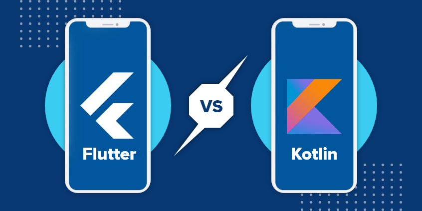

Kotlin Multiplatform vs Flutter: Budućnost multiplatformskog razvoja mobilnih aplikacija
Novembar 2024
U svijetu mobilnog razvoja, potraga za savršenim multiplatformskim rješenjem traje godinama. S obzirom na to koliko je važno pokrivati iOS i Android korisnike uz minimalno dupliranje koda, programeri i kompanije neprestano traže tehnologije koje omogućavaju izgradnju aplikacija za obje platforme, a da pritom ne žrtvuju performanse, korisničko iskustvo ili razvojnu efikasnost. Dva vodeća kandidata za ovu ulogu danas su Kotlin Multiplatform i Flutter. Iako oba alata nude rješenje za multiplatformski razvoj, njihovi pristupi su potpuno različiti. Kotlin Multiplatform fokusira se na dijeljenje logike dok omogućava nativni razvoj sučelja, dok Flutter koristi jedan kôd za sve, kreirajući UI pomoću svog vlastitog renderinga. Ovo sučeljavanje tradicionalnih i modernih pristupa čini ovu raspravu jednom od najvažnijih u svijetu mobilnog razvoja.
Kotlin Multiplatform: Nativno iskustvo kroz dijeljenu logiku
Kotlin Multiplatform (KMP), kojeg razvija JetBrains, omogućava dijeljenje zajedničkog koda između platformi, dok UI ostaje nativan. To znači da možete napisati poslovnu logiku, API pozive, baze podataka i druge funkcionalnosti jednom i koristiti ih na obje platforme, dok istovremeno imate fleksibilnost da dizajnirate iOS i Android sučelje na način koji je specifičan za svaku platformu.
Prednosti Kotlin Multiplatform-a
- Nativni UI: Omogućava korištenje nativnih alata poput UIKit-a na iOS-u i Jetpack Compose-a na Androidu.
- Postepena implementacija: Možete integrirati KMP u postojeće projekte bez potrebe za kompletnim restrukturiranjem.
- Dijeljenje koda: Omogućava dijeljenje poslovne logike, čime smanjuje dupliranje koda i ubrzava razvoj.
Nedostaci Kotlin Multiplatform-a:
- Složeniji razvoj: UI se i dalje razvija odvojeno za svaku platformu, što povećava vrijeme razvoja sučelja.
- Manja zajednica: U poređenju s Flutterom, KMP ima manju zajednicu i manje dostupnih tutorijala.
- Nema potpune multiplatformske pokrivenosti: Još uvijek nije pogodan za sve scenarije i zahtijeva dodatne napore u integraciji.
Flutter: Jedinstveni kod za sve platforme
Flutter, koji razvija Google, omogućava kreiranje aplikacija pomoću jednog koda za sve platforme. Umjesto korištenja nativnih komponenti, Flutter koristi svoj vlastiti rendering engine za prikazivanje korisničkog sučelja, pružajući konzistentno iskustvo na svim uređajima.
Prednosti Flutter-a:
- MJedan kod za sve: UI i logika se pišu jednom i funkcionišu identično na iOS-u i Androidu.
- Brz razvoj: Hot Reload omogućava instantno testiranje promjena, što značajno ubrzava razvoj.
- Konzistentnost: UI izgleda isto na svim platformama, bez obzira na razlike u nativnim komponentama.
- Široka zajednica: Flutter ima veliku zajednicu, mnoštvo biblioteka i dodataka, te odličnu dokumentaciju.
Nedostaci Flutter-a:
- Nekonzistentan osjećaj nativnosti: Budući da ne koristi nativne komponente, aplikacije mogu izgledati i ponašati se drugačije od nativnih aplikacija.
- Veća veličina aplikacije: Flutter aplikacije su veće zbog uključivanja rendering engine-a.
- Kompleksniji pristup platformskim specifičnostima: Iako postoji mogućnost integracije s nativnim kodom, ovaj proces može biti složeniji.
I Kotlin Multiplatform i Flutter imaju svoje prednosti i izazove, a izbor zavisi od specifičnih potreba vašeg projekta. Kotlin Multiplatform privlači one koji žele zadržati nativne performanse i izgled, dok je Flutter idealan za brzo i efikasno kreiranje aplikacija sa zajedničkim korisničkim iskustvom na svim platformama.
Ono što je sigurno je da oba alata predstavljaju budućnost mobilnog razvoja. Bez obzira na to za koji se odlučite, ulazite u uzbudljivo područje koje neprestano evoluira i donosi nove mogućnosti za developere širom svijeta.